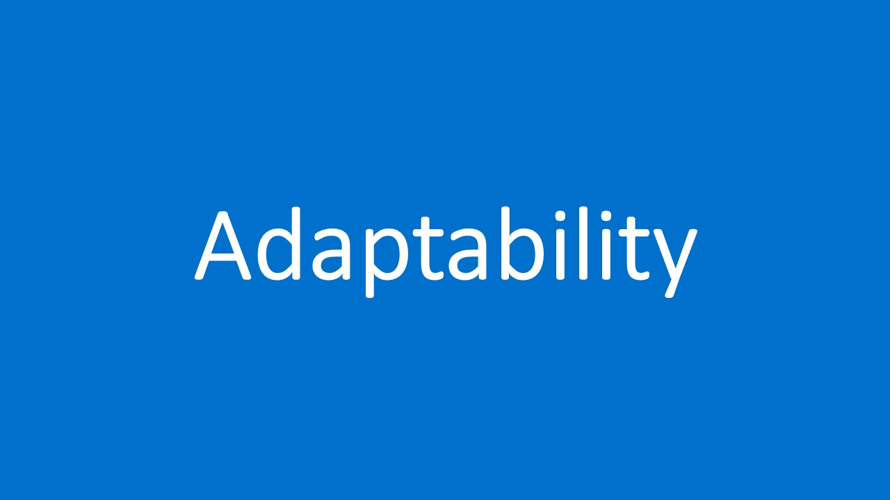
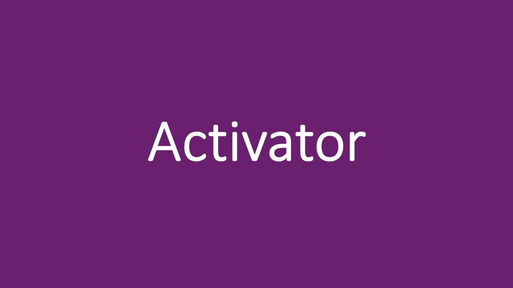

Thomas Karam CV
027 248 7066 | thomas.k747400@gmail.com
These five skills were obtained from the CliftonStrengths assessment I completed at my previous employment. It is designed to identify a person’s strengths and weaknesses to help them maximise their potential.
I am an adaptable worker who likes to go with the flow of the workday. This allows me to quickly respond to any changes in a flexible and calm manner. I enjoy working even when things go wrong, and new challenges arrive.
I enjoy close relationships with others. I find deep satisfaction in collaborating with peers to achieve a goal. I enjoy helping and coaching others to help them succeed in their own endeavours.
I am eager to learn about new facts and ideas, by sharing thinking with other people. I am constantly learning at work and in my spare time. I am a rational thinker who is great at breaking down and analysing ideas.
When making decisions, I maintain presence and take control of the situation. I am realistic and practical, which allows for quick thinking and original thoughts. Performing well under pressure, I can help others succeed.
I make things happen by turning thoughts into action. I am great at getting things done, rather than being held back by ambiguity. This allows me to remove obstacles for myself and others who struggle.
❮
❯

